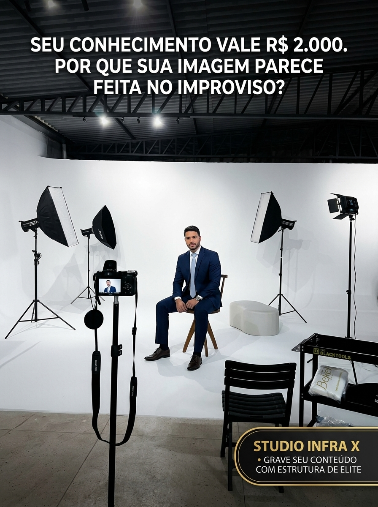

Seu conhecimento vale R$ 2.000. Por que sua imagem parece feita no improviso?
Você já reparou como o cliente julga o valor da sua mentoria ou do seu serviço nos primeiros 10 segundos de vídeo?
Se a iluminação é amarelada, a câmera está tremendo e o fundo é improvisado, a percepção de valor cai instantaneamente.
No Studio Infra X, você não precisa comprar equipamentos caros nem passar noites editando. Você chega, toma um café executivo e nós cuidamos de toda a iluminação Godox de alta velocidade, direção de poses e captação de cinema em ciclorama branco.
Toque no botão abaixo e fale com a nossa equipe no WhatsApp para agendar sua visita.

WHATSAPP.COM / STUDIOINFRAXGrave Seu Conteúdo com Padrão Netflix | Estúdio e Equipe Inclusos
Enviar mensagem
284
42 comentários18 compartilhamentos
Curtir
Comentar
Compartilhar
Anúncio 01 — "A Anatomia da Imagem de Alto Ticket"
Posicionamento no Gerenciador: Meta Ads Feed Desktop/Mobile & Reels. Gatilho Principal: Ancoragem de Autoridade e Alívio de Esforço. Destino: Conversa Direta no WhatsApp com a Closer Samira.
CBO / Campanha MensagensMeta Ads ManagerGoiânia + Raio 20kmWhatsApp Business API